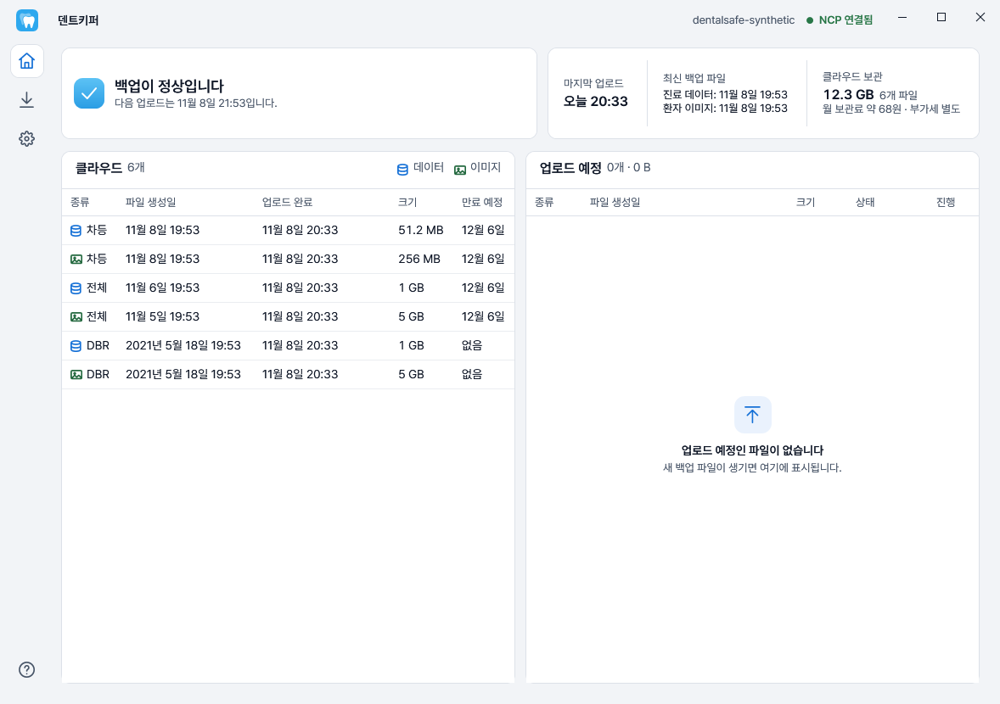
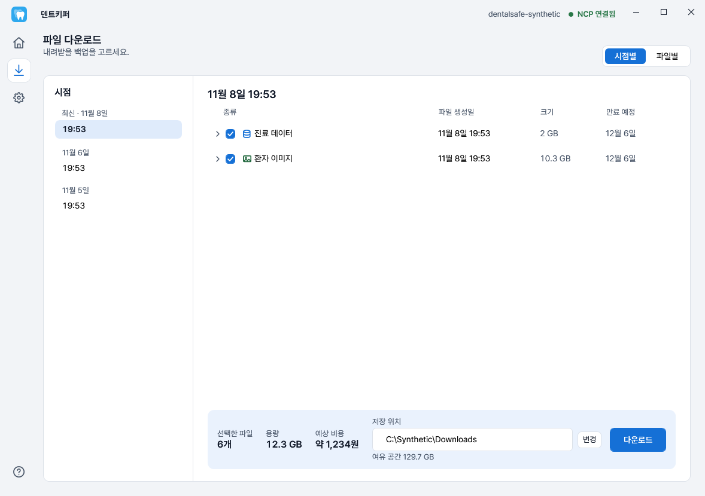

백업 파일은 덴트웹이 만듭니다
전체·차등백업과 DBR 파일의 규칙에 맞춰 보관합니다. 덴트웹 자체의 백업 생성 기능을 대신하지 않습니다.
덴트키퍼 · 국내 치과 프로그램을 위한 클라우드 백업
덴트웹이 만든 백업 파일을 정해진 시간에 암호화해
치과 소유의 클라우드에 보관합니다. 필요할 때는 새 PC에서도 내려받으세요.
무료 Windows 프로그램Windows x64클라우드 이용료 별도
현재 덴트웹 지원
배포 전 검증 중인 버전입니다. 일반 치과 사용을 위한 검증은 아직 완료하지 않았습니다.

보관 장소는 내 클라우드
덴트웹의 백업 방식은 그대로 둡니다.
덴트키퍼가 PC 밖에 사본을 보관하는 일을 맡습니다.
전체·차등백업과 DBR 파일의 규칙에 맞춰 보관합니다. 덴트웹 자체의 백업 생성 기능을 대신하지 않습니다.
암호화한 파일은 치과 명의의 Archive Storage에 보관합니다. 개발자의 백업 서버를 거치지 않습니다.
연결 설정과 암호화 키를 앱 전용 공간에 연동합니다. 백업 파일 자체는 Google Drive에 올리지 않습니다.
백업 파일이 이동하는 경로
클라우드 계정과 비용은 치과에서 직접 관리합니다.
백업 파일을 매번 옮기지 않아도
치과 프로그램의 백업 파일을 이해하는 자동화.
필요한 기능에 집중했습니다.
선택한 요일과 시간에만 업로드합니다.
시간이 끝나면 멈추고, 다음 허용 시간에 이어 올립니다.
PC가 켜져 있고 인터넷에 연결되어 있어야 합니다.
같은 Google 계정으로 설정과 키를 불러옵니다.
받을 파일과 예상 비용을 확인하고 다운로드하세요.

다운로드한 파일은 복호화·무결성 확인 후 반환합니다. 덴트웹에 파일을 적용하는 DB 복원은 덴트웹의 절차를 따릅니다.
예를 들어, 100GB를 한 달 보관하면 약 550원.
요청·다운로드 비용과 부가세는 별도입니다.
2026-11-05 확인한 NCP Archive Storage 요금 기준입니다. 보관료는 월평균 저장량 기준이며, 모든 API 요청은 건당 0.06원입니다. NCP로 들어가는 업로드 전송료는 무료입니다.
인터넷 다운로드 전송료: 월 5TB 이하 GB당 100원, 다음 5TB 90원, 다음 20TB 80원, 30TB 초과분 70원입니다.
금액은 부가세 별도 예상치이며 실제 청구액과 다를 수 있습니다. 앱은 1GB=1,024MB로 계산하며 NCP의 용량 산정 방식과 월 전체 사용량에 따라 차이가 날 수 있습니다. 재시도·정리 등 일부 요청은 앱의 예상에 포함되지 않을 수 있습니다.
처음 시작하기
NCP Archive Storage와 본인 Google 계정을 준비하고, Windows용 덴트키퍼를 설치합니다. Google 계정에는 2단계 인증을 설정해 주세요.
Google 로그인 후 NCP 연결정보를 입력합니다. 실제 덴트웹 백업 폴더, 업로드 허용 시간과 보관기간을 정합니다. 인증키는 직접 입력하세요.
진료 데이터와 환자 이미지의 보관 결과를 각각 확인합니다. 작은 파일을 내려받아 보고, Google 설정 동기화도 확인해 주세요.
기존 설정이 나오면 새로 만들지 말고 불러오세요. 자동 백업은 저장소당 PC 1대에서만 실행합니다.
알아두면 좋은 내용
설치 전, 보관 범위와
계정 관리 방법을 확인하세요.
아니요. 덴트웹에서 기존 방식으로 로컬 백업을 생성해야 합니다. 덴트키퍼는 그 파일을 탐색·암호화하여 클라우드에 보관합니다. 현재는 선택한 폴더 바로 아래의 파일만 찾으며 하위 폴더는 찾지 않습니다. 파일이 마지막으로 바뀐 뒤 최소 10분이 지나고 업로드 허용 시간이 되어야 올립니다.
전체백업과 기준 전체백업이 확인된 차등백업을 올립니다. 차등백업은 기준 전체백업과 함께 만료됩니다. DBR 파일이 있으면 만료일 없이 보관하므로 계속 보관료가 생길 수 있습니다. DBR이 없어도 오류는 아닙니다. 보관기간을 바꿔도 이미 올라간 파일의 만료일은 바뀌지 않습니다.
덴트키퍼를 설치한 뒤 같은 Google 계정으로 로그인하고 기존 백업 다운로드를 고르세요. 새 PC는 다운로드 전용으로 시작합니다. 파일과 저장 폴더를 고르고 예상 비용을 확인한 뒤 내려받습니다. 실제 덴트웹 DB 복원은 덴트웹 절차를 따릅니다. 자동 백업까지 옮기려면 이전 PC의 자동 백업을 먼저 중지하고 새 PC의 폴더를 직접 고른 뒤 저장하세요.
연결 설정과 백업을 여는 암호화 키를 본인 Google 계정의 앱 전용 공간에 연동하기 위해 필요합니다. 백업 파일 자체는 NCP에 보관합니다. Google 계정과 인증 수단을 잃으면 이전 백업을 열지 못할 수 있으므로 2단계 인증을 설정하고 계정을 관리해 주세요. 동기화 보류 안내가 남아 있으면 기존 PC를 폐기하거나 앱을 제거하기 전에 다시 확인하세요.
일반 제거는 이 PC의 설정과 키를 지웁니다. Google 동기화가 끝나 있으면 같은 계정으로 다시 열 수 있지만, 그렇지 않으면 이전 백업을 열지 못할 수 있습니다. 상태를 확인하지 못하면 제거를 취소하고 앱에서 Google 설정을 확인하세요. 클라우드 백업과 NCP 요금은 그대로 남습니다. 앱 제거는 NCP 파일을 지우지 않으며 업데이트는 설정과 키를 지우지 않습니다.
덴트키퍼의 제공 범위는 백업 파일 보관과 다운로드·복호화까지입니다. 덴트웹 DB 직접 복원, 랜섬웨어 감지·차단, 긴급 출동과 상시 관제는 제공하지 않습니다. 프로그램 오류 문의를 받고 버그 수정과 업데이트를 제공합니다. 24시간 기술지원이나 정해진 시간 내 해결을 보장하지 않습니다.
덴트키퍼 · DentKeeper
덴트웹의 로컬 백업을 내 클라우드에 보관하세요.
현재 배포 전 검증 중인 후보입니다.
문의할 때 환자 자료, 비밀번호와 인증키는 보내지 마세요.